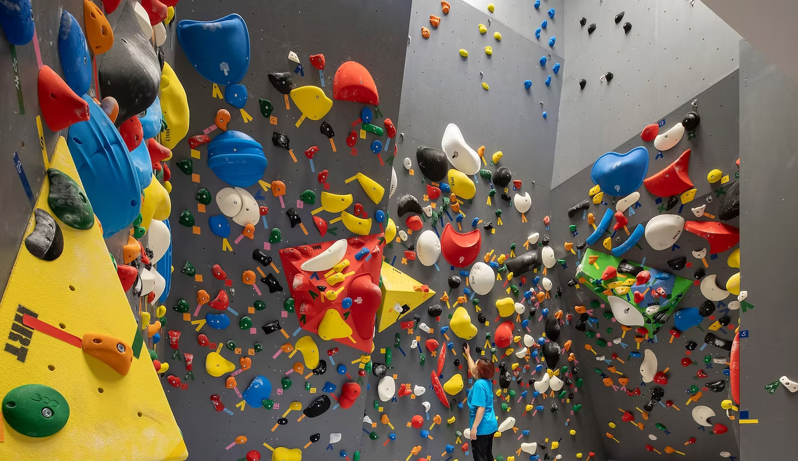
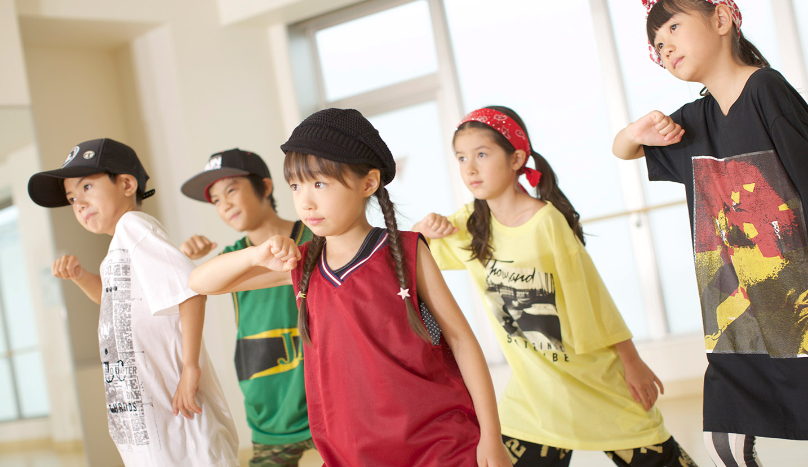
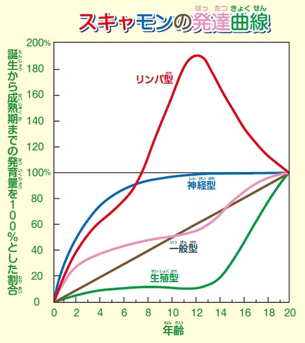
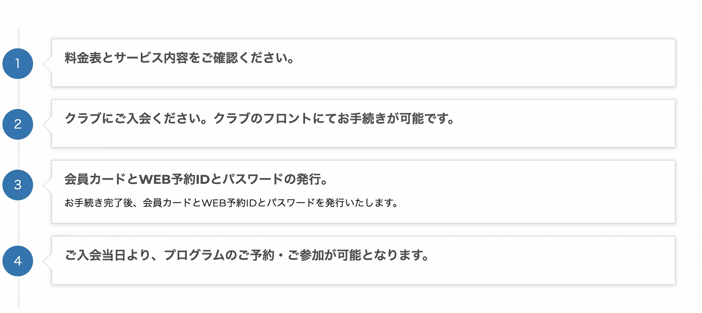

RIVER PARK 聖蹟桜ヶ丘KIDSアフタースクール
KIDSアフタースクール
RIVER PARK聖蹟桜ヶ丘では、プレゴールデンエイジ・ゴールデンエイジである年中〜小学生のお子様を対象としたKIDSアフタースクールを開催しております。当アフタースクールでは、ボルダリング・フリースタイルダンス・アウトドアフィットネスの３つのコースをご用意しており、全コース共通して、思いやりの心、失敗から立ち上がる力、自己肯定感、自ら考える力を育み、変化の激しい現代社会を生き抜く人間力を養います。
3つの目標
- 社会性の成長
- 「礼儀正しく自ら挨拶」を大切にし、ルールやマナーを守れる社会性を身につけます。
- 挑戦する勇気
- 失敗することは悪いことではありません。沢山失敗し、失敗から立ち上がる経験を重ねて、挑戦する勇気育みます。
- 思いやりの心
- 相手を尊重し、相手の立場に立って考え、協力しながら困難を乗り越える力を身につけます。
カリキュラム


▪️スクール料金について
各コース 月額：7,480円（税込） 月４回（第５週目は休講となります。）
KIDSアフタースクールの嬉しい３つのポイント！
- 01ボルダリングフリー利用OK！
- RIVER PARK KIDSアフタースクール生になると、どのコースに通われているお子様も、営業時間中ボルダリング登り放題！沢山練習して上達しましょう！
（フリー利用ではクライミングシューズ・チョークのレンタルは有料となります） - 02保護者様のラウンジご利用O K！
- スクールのお子様の様子をご見学いただくことは、もちろんOKです。また、開催中ラウンジでお茶を飲みながらお待ちいただくことも可能です。
- 03初回は体験無料！
- 楽しめるかどうかは、一度チャレンジしてみないと分かりません。どのお子様も全コース、初回のご体験は無料でご参加いただけます。
5歳までで80％、12歳でほぼ100％神経系が発達
「スキャモンの発育発達曲線（グラフ）」によると、神経系の機能は生まれてから5歳までに大人の80%の成長を遂げ、12歳でほぼ100%になります。こどもの頃は神経系の発達が著しく、神経回路が形成されていく大切な時期ですので、スクールを通して様々な動きを経験する最適な時期と言えます。
年齢で覚える動作や能力に違いがありますので、その年齢別特性に合わせて指導を行っています。
特にお子様の発育・発達には個人差が大きく見られますので、一人ひとりの段階に合わせた指導を行うことが重要です。年齢別特性と発育・発達を踏まえた指導やカリキュラムを通してお子様の健全な心と体を育みます。
保護者様もお子様ができるようになったことを見つけ褒めてあげてください。褒めて認めてあげることが心と体の成長を伸ばすことができるのです。

ご入会はフロントまで！

開催場所や集合・解散は、クラブとなります。
ー当日の流れー
- クラブハウスに集合
- 受付・ご挨拶と更衣
- クラブハウスで解散
- スクール
（悪天候の時はスタジオで開催します） - クラブハウスに戻り終了解散